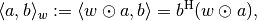
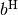
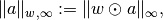
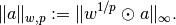
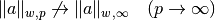
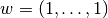

NumpyFnArrayWeighting¶
-
class
odl.space.npy_ntuples.NumpyFnArrayWeighting(array, exponent=2.0, dist_using_inner=False)[source]¶ Bases:
odl.space.weighting.ArrayWeightingWeighting of
Fnby an array.This class defines a point-wise weighting, i.e., a weighting with a different value for each index. See
Notesfor mathematical details.Attributes
arrayWeighting array of this inner instance. dist_using_innerTrueif the distance should be calculated using inner.exponentExponent of this weighting. implImplementation backend of this weighting. repr_partString usable in a space’s __repr__method.Methods
__eq__(other)Return self == other.dist(x1, x2)Calculate the distance between two elements. equiv(other)Return True if other is an equivalent weighting. inner(x1, x2)Return the weighted inner product of two vectors. is_valid()Return True if the array is a valid weight, i.e. norm(x)Calculate the array-weighted norm of a vector. -
__init__(array, exponent=2.0, dist_using_inner=False)[source]¶ Initialize a new instance.
Parameters: array :
array-like, one-dim.Weighting array of the inner product, norm and distance.
exponent : positive float
Exponent of the norm. For values other than 2.0, no inner product is defined.
dist_using_inner : bool, optional
Calculate
distusing the formula||x - y||^2 = ||x||^2 + ||y||^2 - 2 * Re <x, y>This avoids the creation of new arrays and is thus faster for large arrays. On the downside, it will not evaluate to exactly zero for equal (but not identical)
xandy.This option can only be used if
exponentis 2.0.Notes
For exponent 2.0, a new weighted inner product with array
 is defined as
is defined as
where  stands for transposed complex conjugate and for entry-wise multiplication.
For other exponents, only norm and dist are defined. In the case of exponent , the weighted norm is

otherwise it is (using point-wise exponentiation)

Note that this definition does not fulfill the limit property in
 , i.e.
, i.e.
unless . The reason for this choice is that the alternative with the limit property consists in ignoring the weights altogether.
The array may only have positive entries, otherwise it does not define an inner product or norm, respectively. This is not checked during initialization.
-